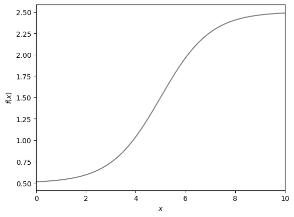
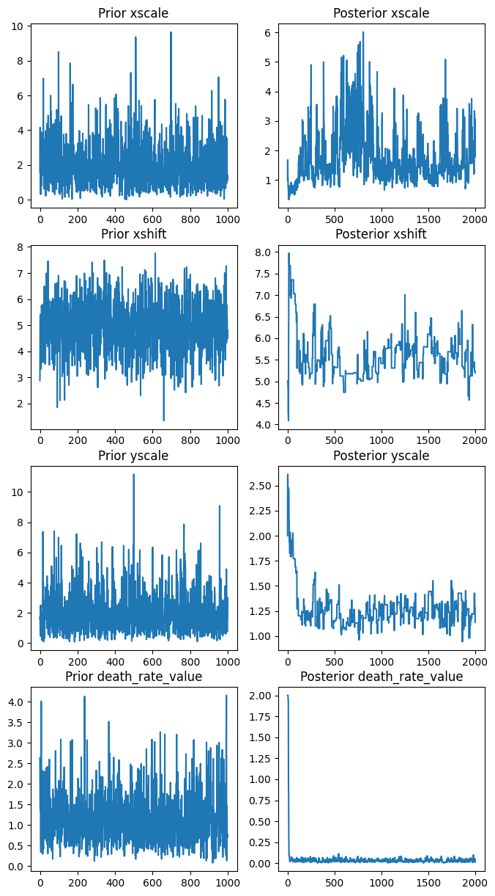
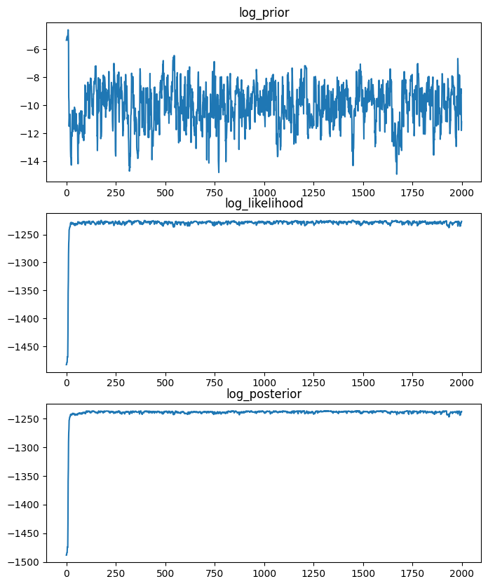
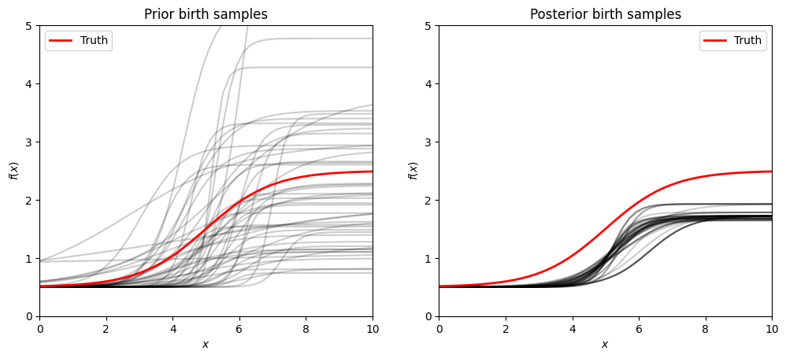
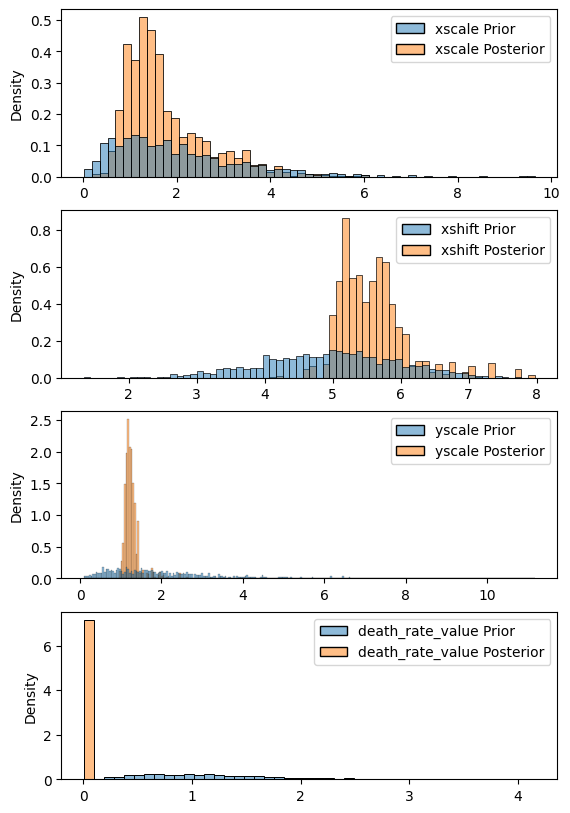

Posterior inference on a birth-death model#
from gcdyn import models, mutators, poisson, utils
from scipy.stats import gamma, lognorm, norm
from functools import partial
import numpy as np
import seaborn as sns
from mcmc import mh_tour
from jax import jit
from jax.config import config
import matplotlib.pyplot as plt
config.update("jax_enable_x64", True)
Set up truth#
# (Deliberately avoiding rate parameters == constant 1, because a lot of bugs hide in this scenario)
true_parameters = {
"birth_response": poisson.SigmoidResponse(1.0, 5.0, 2.0, 0.5),
"death_response": poisson.ConstantResponse(1.3),
"mutation_response": poisson.ConstantResponse(1.2),
"mutator": mutators.DiscreteMutator(
state_space=(1, 3, 5, 7, 9),
transition_matrix=np.array(
[
[3, 2, 2, 1, 1],
[2, 3, 2, 1, 1],
[1, 2, 3, 2, 1],
[1, 1, 2, 3, 2],
[1, 1, 2, 2, 3],
]
)
/ 9,
),
"extant_sampling_probability": 1,
"extinct_sampling_probability": 0,
}
utils.plot_responses(true_parameters["birth_response"], x_range=(0, 10))

Sample trees#
seed = 10
PRESENT_TIME = 4
trees = utils.sample_trees(n=12, t=PRESENT_TIME, init_x=1, **true_parameters, seed=seed)
for tree in trees:
if true_parameters["extinct_sampling_probability"] == 1:
tree._pruned = True
elif true_parameters["extinct_sampling_probability"] == 0:
tree.prune()
print(
"After pruning: average of",
sum(len(list(tree.traverse())) for tree in trees) / len(trees),
"nodes per tree, over",
len(trees),
"trees.",
)
Notice: obtained error 'number of survivors 0 is less than min_survivors=1' 131 times.
Success: average of 247.66666666666666 nodes per tree, over 12 trees.
After pruning: average of 111.83333333333333 nodes per tree, over 12 trees.
Configure priors and proposals#
mcmc_config = {
"xscale": {
"prior": gamma(a=2, scale=1),
"proposal": lambda current: lognorm(scale=current, s=3),
},
"xshift": {
"prior": norm(loc=5, scale=1),
"proposal": lambda current: norm(loc=current, scale=2),
},
"yscale": {
"prior": gamma(a=2, scale=1),
"proposal": lambda current: lognorm(scale=current, s=1),
},
# "yshift": {
# "prior": gamma(a=1, scale=1 / 2),
# "proposal": lambda current: lognorm(scale=current, s=1),
# },
"death_rate_value": {
"prior": gamma(a=3.5, scale=1 / 3),
"proposal": lambda current: lognorm(scale=current, s=0.5),
},
}
log_priors = {param: config["prior"].logpdf for param, config in mcmc_config.items()}
proposal_generators = {
param: (lambda current: config["proposal"](current).rvs(size=1).item())
for param, config in mcmc_config.items()
}
proposal_log_densities = {
param: (lambda prop, cur: config["proposal"](cur).logpdf(prop))
for param, config in mcmc_config.items()
}
# To compare to posterior later
prior_samples = {
param: config["prior"].rvs(size=1000) for param, config in mcmc_config.items()
}
Configure likelihood#
log_likelihood_base = jit(
partial(
models.stadler_appx_log_likelihood,
trees=trees,
mutation_response=true_parameters["mutation_response"],
mutator=true_parameters["mutator"],
extant_sampling_probability=true_parameters["extant_sampling_probability"],
extinct_sampling_probability=true_parameters["extinct_sampling_probability"],
present_time=PRESENT_TIME,
)
)
# Trigger a JIT compile now
log_likelihood_base(
birth_response=true_parameters["birth_response"],
death_response=true_parameters["death_response"],
)
Array(-1383.03523618, dtype=float64)
def log_likelihood(death_rate_value, **birth_params):
# def log_likelihood(**birth_params):
return log_likelihood_base(
birth_response=poisson.SigmoidResponse(
**birth_params, yshift=true_parameters["birth_response"].yshift
),
death_response=poisson.ConstantResponse(death_rate_value),
# death_response=true_parameters["death_response"],
)
Run MCMC#
posterior_samples, diagnostics = mh_tour(
num_samples=2000,
initial_value={
"xscale": true_parameters["birth_response"].xscale,
"xshift": true_parameters["birth_response"].xshift,
"yscale": true_parameters["birth_response"].yscale,
# "yshift": true_parameters["birth_response"].yshift,
"death_rate_value": 2,
},
log_priors=log_priors,
log_likelihood=log_likelihood,
proposal_generators=proposal_generators,
proposal_log_densities=proposal_log_densities,
)
Traceplots#
fig, axes = plt.subplots(len(posterior_samples), 2)
fig.set_figwidth(8)
fig.set_figheight(15)
for i, param in enumerate(posterior_samples):
sns.lineplot(prior_samples[param], ax=axes[i, 0])
axes[i, 0].set_title(f"Prior {param}")
sns.lineplot(posterior_samples[param], ax=axes[i, 1])
axes[i, 1].set_title(f"Posterior {param}")
plt.show()
fig, axes = plt.subplots(len(diagnostics), 1)
fig.set_figwidth(8)
fig.set_figheight(10)
for ax, diag in zip(axes, diagnostics):
sns.lineplot(diagnostics[diag], ax=ax)
ax.set_title(diag)
plt.show()


for param, chain in posterior_samples.items():
acceptance_ratio = np.mean(chain[:-1] != chain[1:])
print(f"Accepted {acceptance_ratio*100}% of {param} proposals")
Accepted 57.15% of xscale proposals
Accepted 12.2% of xshift proposals
Accepted 15.65% of yscale proposals
Accepted 72.89999999999999% of death_rate_value proposals
Posterior samples and means#
x_array = np.linspace(0, 10)
fig, axes = plt.subplots(1, 2)
for samples, ax in zip((prior_samples, posterior_samples), axes):
birth_responses = []
for i in range(len(samples["xscale"]) - 50, len(samples["xscale"])):
response = poisson.SigmoidResponse(
xscale=samples["xscale"][i].item(),
xshift=samples["xshift"][i].item(),
yscale=samples["yscale"][i].item(),
yshift=true_parameters[
"birth_response"
].yshift, # samples["yshift"][i].item(),
)
birth_responses.append(response)
for response in birth_responses:
ax.plot(x_array, response.λ_phenotype(x_array), color="black", alpha=0.2)
ax.plot(
x_array,
true_parameters["birth_response"].λ_phenotype(x_array),
label="Truth",
linewidth=2,
color="red",
)
ax.set_xlabel(r"$x$")
ax.set_ylabel(r"$f(x)$")
ax.set_xlim(0, 10)
ax.set_ylim(0, 5)
ax.legend()
axes[0].set_title("Prior birth samples")
axes[1].set_title("Posterior birth samples")
fig.set_figwidth(12)
plt.show()

print("Prior means:", {param: round(s.mean(), 3) for param, s in prior_samples.items()})
print(
"Posterior means:",
{param: round(s.mean(), 3) for param, s in posterior_samples.items()},
)
Prior means: {'xscale': 1.997, 'xshift': 4.969, 'yscale': 1.988, 'death_rate_value': 1.17}
Posterior means: {'xscale': 1.755, 'xshift': 5.59, 'yscale': 1.266, 'death_rate_value': 0.042}
fig, axes = plt.subplots(len(posterior_samples), 1)
fig.set_figheight(10)
for ax, param in zip(axes, posterior_samples):
s = {
f"{param} Prior": prior_samples[param],
f"{param} Posterior": posterior_samples[param],
}
sns.histplot(s, ax=ax, stat="density")
